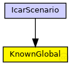

This documentation is released under the Creative Commons license
This documentation is released under the Creative Commons licenseTODO auto-generated module
The following diagram shows usage relationships between types. Unresolved types are missing from the diagram. Click here to see the full picture.
The following diagram shows inheritance relationships for this type. Unresolved types are missing from the diagram. Click here to see the full picture.
| Name | Type | Description |
|---|---|---|
| IcarScenario | network | (no description) |
| Name | Type | Default value | Description |
|---|---|---|---|
| vehicleAmount | int | 0 | |
| startSimulation | double | 0 | |
| endSimulation | double | 0 | |
| observation | string | "" |
double simulationDuration= default(610s) @unit(s); |
| filesDirectory | string | "" |
simulation files directory; |
| simulationDataheaderLine | bool | true |
if use the simulation data with header line |
| traceChangedMobility | bool | true |
gravar a atualização do contexto quando a mobilidade eh alterada em cada veiculo |
| lostMessageRate | double | 0 |
percentual de perda de mensagens por veículo |
| mobilityPeriod | double | 1 | |
| appTypeId | int | 0 |
General Communication Service of icarqoc |
| loadPeriodApp | double | 0 | |
| deliveryDelay | double | 0 |
atraso maximo tolerado pela aplicacao |
| timeToLive | double | 0s |
tempo de vida da mensagem na rede |
| perforMesurementPeriod | double | 1 |
Período de medição do desempeno da comunicação do agente CommPerformance |
| monitorPeriod | double | 1 |
Período de monitoração beacon msg |
| radiusSet | double | 0 |
set radius - declared radius in meters |
| Name | Value | Description |
|---|---|---|
| class | veins::KnownGlobal |
// // TODO auto-generated module // simple KnownGlobal { @class(veins::KnownGlobal); int vehicleAmount = default(0); double startSimulation = default(0); double endSimulation = default(0); //double simulationDuration= default(610s) @unit(s); string observation = default(""); //simulation files directory; string filesDirectory = default(""); // if use the simulation data with header line bool simulationDataheaderLine = default(true); // gravar a atualização do contexto quando a mobilidade eh alterada em cada veiculo bool traceChangedMobility = default(true); // percentual de perda de mensagens por veículo double lostMessageRate = default(0); double mobilityPeriod = default(1); // General Communication Service of icarqoc int appTypeId = default(0); // este valor foi adotado para codificar o tipo de aplicacao double loadPeriodApp = default(0); double deliveryDelay = default(0); //atraso maximo tolerado pela aplicacao double timeToLive @unit(s) = default(0s); // tempo de vida da mensagem na rede double perforMesurementPeriod = default(1); // Período de medição do desempeno da comunicação do agente CommPerformance double monitorPeriod = default(1); // Período de monitoração beacon msg double radiusSet = default(0); // set radius - declared radius in meters }
This documentation is released under the Creative Commons license